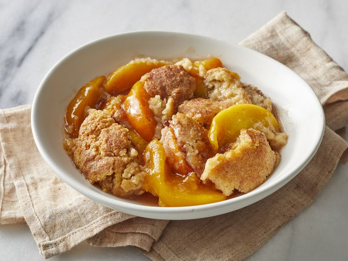

Home
Peach Cobbler Recipe
Peach Cobbler Recipe

What is this recipe about
Peach cobbler is a fruit dessert with a biscuit-like topping, often made with fresh, frozen, or canned peaches mixed with sugar, spices, lemon juice, and cornstarch. Frozen or canned work well (4 cups fresh = 2 cans or 40 oz frozen). Choose ripe peaches that are fragrant and slightly soft; unripe ones can ripen at room temp. Peeling is optional, though blanching makes it easier. It's best served warm (with ice cream) but keeps up to four days in the fridge and reheats in the oven or microwave.
- 8 fresh peaches - peeled, pitted and sliced into thin wedges
- ¼ cup white sugar
- ¼ cup brown sugar
- ¼ teaspoon ground cinnamon
- ⅛ teaspoon ground nutmeg
- 1 teaspoon fresh lemon juice
- 2 teaspoons cornstarch
- 1 cup all-purpose flour
- ¼ cup white sugar
- ¼ cup brown sugar
- 1 teaspoon baking powder
- ½ teaspoon salt
- 6 tablespoons unsalted butter, chilled and cut into small pieces
- ¼ cup boiling water
- 3 tablespoons white sugar
- 1 teaspoon ground cinnamon
- Gather all ingredients.
- Preheat the oven to 425 degrees F (220 degrees C).
- Combine peaches, 1/4 cup white sugar, 1/4 cup brown sugar, 1/4 teaspoon cinnamon, nutmeg, lemon juice, and cornstarch in a large bowl; toss to coat evenly, and pour into a 2-quart baking dish. Bake in preheated oven for 10 minutes.
- Meanwhile, combine flour, 1/4 cup white sugar, 1/4 cup brown sugar, baking powder, and salt in a large bowl. Blend in butter with your fingertips or a pastry blender until mixture resembles coarse crumbs. Stir in water until just combined.
- Remove peaches from oven, and drop spoonfuls of topping over them.
- Mix 3 tablespoons white sugar and 1 teaspoon cinnamon together in a small bowl; sprinkle over entire cobbler.
- Bake in the preheated oven until topping is golden, about 30 minutes.